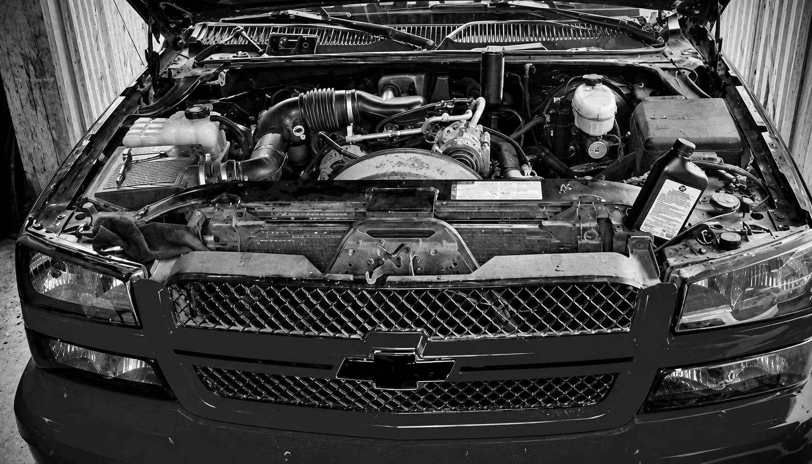
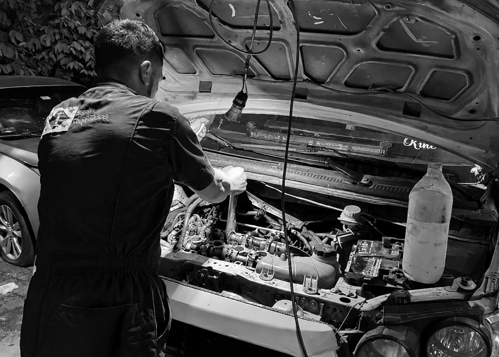

Mecánica general
Revisión y reparación de los componentes mecánicos para ayudar a mantener tu vehículo en buen estado.

Pasión por la mecánica, compromiso con las personas.
Honestidad y experiencia al servicio de tu auto.
En Taller Mecánico EDR trabajamos con responsabilidad y compromiso para ayudarte a mantener tu vehículo en buenas condiciones.


Revisión y reparación de los componentes mecánicos para ayudar a mantener tu vehículo en buen estado.
Mantenimiento del motor para favorecer su funcionamiento y detectar posibles problemas.
Revisión de posibles fallas eléctricas y apoyo en la identificación de problemas del vehículo.
Revisión de los componentes de la suspensión para detectar fallas que puedan afectar la estabilidad y comodidad al conducir.
Inspección de elementos esenciales para el mantenimiento y funcionamiento seguro de tu automóvil.
Revisiones periódicas para identificar posibles problemas y ayudar a conservar tu vehículo en buenas condiciones.
Cuéntanos qué necesita tu vehículo y solicita una cotización.
Solicitar cotización